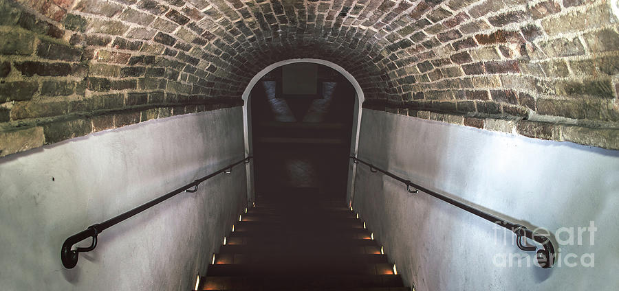

quickly runs out of the room and trys and find a place to hide they look all around and see a set of stairs, as they run over they see the cult go down into the basement they hear them in the altar room talking about someone messing around with the Grimoire and they hear them come to the conclusion that an intruder is in Gilman house.
